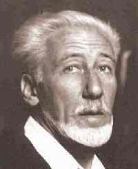

- Human Action: A Treatise on Economics. 1949
- Planning for Freedom. 1952
- The Anti-Capitalistic Mentality. 1956
Ludwig von Mises
Friederich von Hayek

Robert Nozick
Hans Herman Hoppe

- Man, Economy, and State. 1962
- Egalitarism as a Revolt Against Nature. 2000
- The Ethics of Liberty. 1982
Murray Rothbard
Bertrand de Jouvenel

- De la production de la sécurité. 1849
- The Utopia of Liberty. 1848
- L’Évolution politique et la révolution. 1884